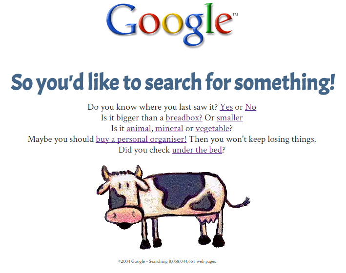

Recommending the Recommendation
Artyom Desyatnikov
the best software writing i
by Joel Spolsky
Points
- Introduction by Joel Spolsky
- Style is Substance by Ken Arnold
- Award for The Silliest User Interface: Windows Search by Leon Bambrick
- The Pitfalls of Outsourcing Programmers by Michael Bean
Introduction
- Value of stories
- Especially in IT books
Style is Substance
by Ken Arnold
- Python indentation as an example
- Not style but the unity of it
- Enforcing in grammar
It's Bob's Time
by Leon Bambrick

THE PITFALLS OF OUTSOURCING PROGRAMMERS
by Michael Bean
- Shoe factory inspiration
- Ability to innovate
- Confuse chocolates with boxes
Points Once Again
- Introduction by Joel Spolsky
- Style is Substance by Ken Arnold
- Award for The Silliest User Interface: Windows Search by Leon Bambrick
- The Pitfalls of Outsourcing Programmers by Michael Bean
the best software writing i
by Joel Spolsky